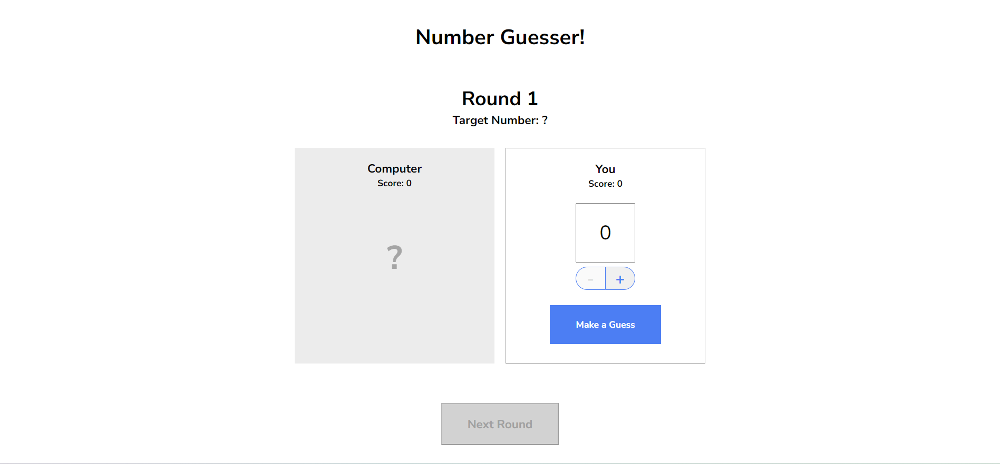
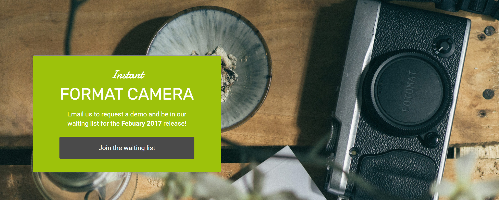
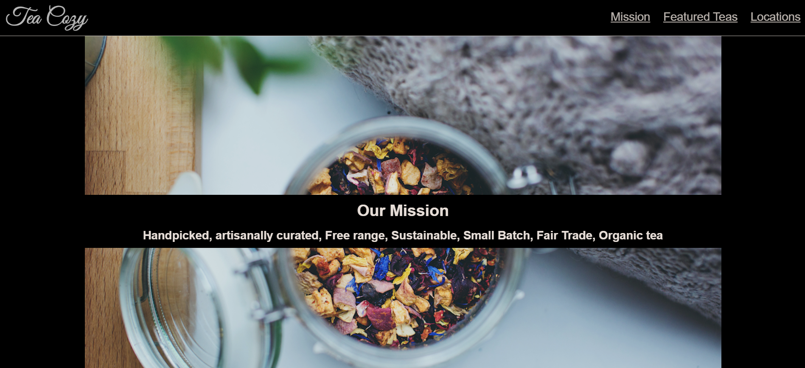

About Me
I'm an aspiring web developer based in the south of the UK. Formally a design and assembly engineer in the bicycle industry, I'm excited to put my skillset to use designing and building user-friendly, responsive and accessable websites and apps.
I have a passion for problem-solving and a naturally analytical mind, both of which have made learning to code an enjoyable and productive experience. I am now looking for work where I can put my latest qualifications into practice. Please contact me for a CV or if you'd like to have a conversation about what I can do for you.
Projects
A responsive landing page developed using HTML and CSS. The focus here was on the CSS flex model and media Queries.
A simple number guessing game built with Javascript.
This project was formed by troubleshooting some broken code using HTML and CSS.
A landing page that was built based on a .pdf design specification.